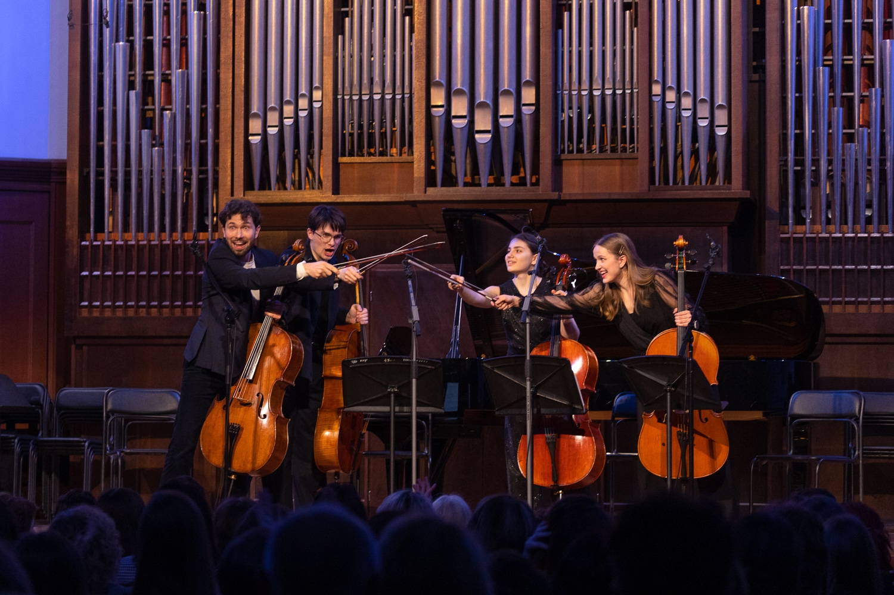
Наша миссия и ценности
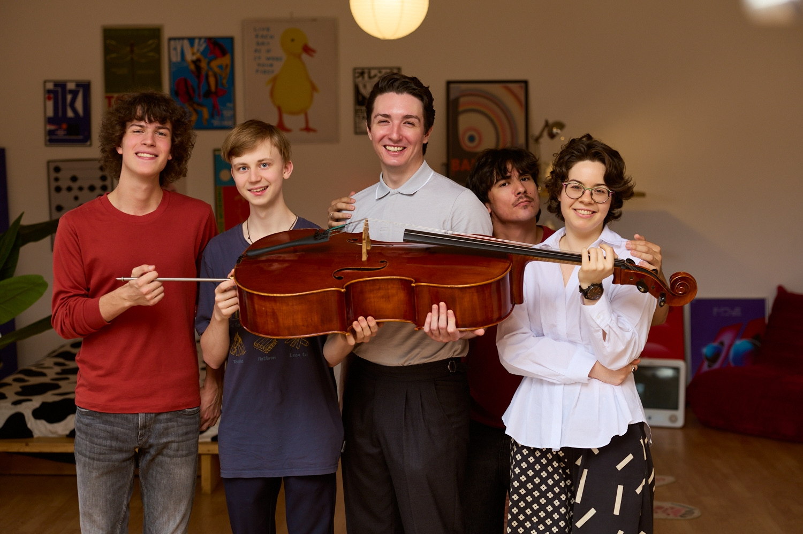
Будущее музыкальной культуры складывается из множества человеческих усилий. Из ежедневной работы педагога, первых шагов ребёнка, смелости молодого исполнителя, продолжающегося поиска зрелого артиста и интереса слушателя. Даже самая сильная традиция не может развиваться, если все эти люди существуют отдельно и им негде встретиться.
Виолончельная академия работает над тем, чтобы такое общее пространство существовало. Мы объединяем тех, кто играет на виолончели, преподаёт, исследует, слушает музыку и помогает ей звучать. Нас интересуют не только отдельные достижения, но и состояние всей среды, в которой растёт человек и живёт профессия.
Одна из главных задач Академии — развитие виолончельной школы в России и её связей с мировым музыкальным сообществом. Слово «школа» мы понимаем широко. Это исполнительские и педагогические традиции, накопленные несколькими поколениями. Это солисты, оркестровые и ансамблевые музыканты, педагоги, исследователи и просветители. Это профессиональные связи, площадки, знания и возможности. И, конечно, это слушатели, без которых музыкальная культура не может полноценно жить.
Музыка помогает человеку проживать и осмыслять свой опыт, формирует способность чувствовать, соединяет людей, поколения и культуры. Музыканты сохраняют культурную память и одновременно создают её продолжение. Поэтому, развивая виолончельную среду, мы думаем и о будущем профессии, и о месте музыки в жизни людей.
Мы хотим, чтобы всё больше людей выбирали виолончель и оставались с ней на долгие годы. Чтобы профессионалы находили новые возможности, любители получали радость от занятий музыкой, педагоги чувствовали поддержку коллег, а слушатели открывали для себя виолончель как самостоятельный и богатый мир.
Виолончель остаётся центром всей работы ВА. Академия может обращаться к другим искусствам и участвовать в более широких музыкальных проектах, если они помогают развивать музыкальную среду и имеют убедительный художественный смысл.
Наши ценности
1. Сообщество
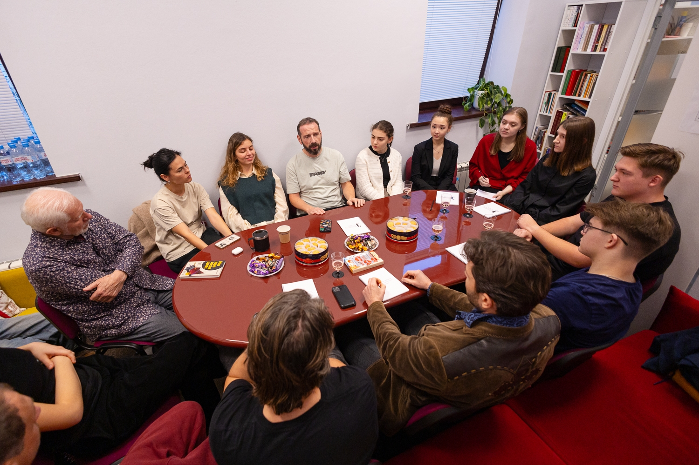
Виолончель объединяет очень разных людей. На наших мероприятиях мы рады видеть педагогов и исполнителей, взрослых и детей, профессионалов и любителей, постоянных слушателей и тех, кто только начинает знакомство с инструментом.
Сообщество для нас — не список имён и не круг полезных знакомств. Это пространство, где люди общаются, учатся друг у друга, делятся опытом и придумывают совместные проекты. Там, где есть доверие и постоянный контакт, появляются возможности, которые трудно создать в одиночку.
Нам важно собирать вместе разные поколения и разные части профессии. Молодому музыканту нужна встреча с мастером. Педагогу из региона — разговор с коллегами. Опытному артисту — новые идеи и внимательная аудитория. Слушателю — возможность быть рядом с музыкой и лучше понимать её. Каждый входит в это сообщество по-своему, и каждый делает его полнее.
Мы искренне радуемся успехам участников, педагогов и коллег. Сильный результат одного человека привлекает внимание к виолончели, поднимает общую планку и открывает новые возможности для всей среды. Мы хотим, чтобы стремление к личным достижениям сочеталось с готовностью поддерживать друг друга и работать вместе.
2. Простота и доброжелательность
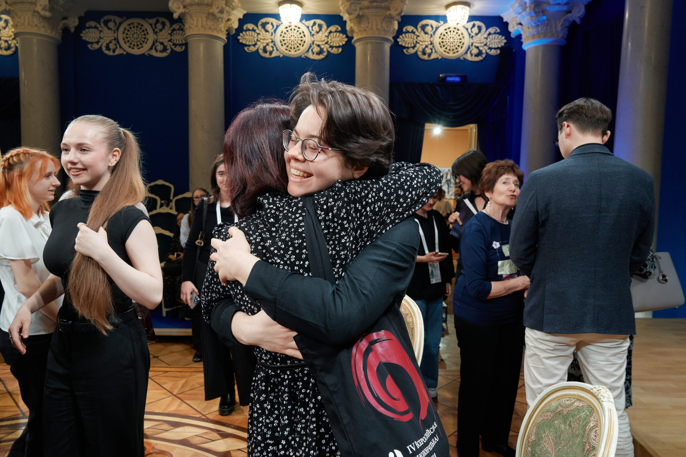
Нам близка спокойная, открытая и уважительная манера общения. Без высокомерия, взгляда сверху вниз и искусственной дистанции между известным артистом, студентом, ребёнком или слушателем.
На встречах ВА можно подойти к педагогу или исполнителю, задать вопрос и получить доброжелательный ответ. Большой опыт и высокий статус не должны отделять человека от остальных. Напротив, особенно ценно, когда мастер готов делиться знаниями просто и щедро.
Образование мы понимаем как диалог. У студента, начинающего педагога, любителя и ребёнка должно оставаться право на вопрос, сомнение и собственное мнение. Хорошая обратная связь помогает увидеть проблему и понять, что делать дальше. Она может быть честной и требовательной, но остаётся индивидуальной, поддерживающей и уважительной.
Мы стараемся создать атмосферу, в которой человеку рады, где он может проявлять инициативу и не боится ошибиться. Доброжелательность не отменяет профессиональной серьёзности. Она делает развитие возможным без унижения, снобизма и страха.
3. Развитие и мастерство
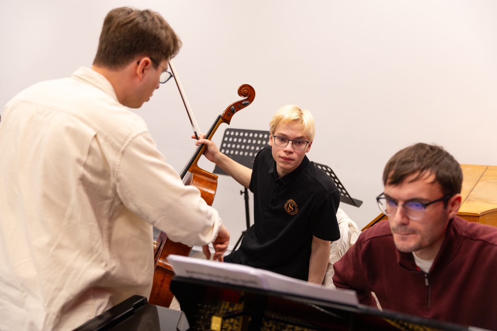
Мастерство для нас — это движение вперёд. Для начинающего виолончелиста им может стать первое уверенно сыгранное произведение, для студента — новый профессиональный уровень, для зрелого музыканта — более глубокое понимание музыки и собственного искусства. Нам важны путь человека и его желание становиться лучше.
Мы рады каждому, кто выбирает виолончель: ребёнку и взрослому, профессионалу и любителю, будущему солисту и человеку, для которого музыка останется важной частью личной жизни. Само занятие музыкой развивает внимание, волю, воображение и способность слышать другого. Даже если ученик не станет профессиональным музыкантом, этот опыт останется с ним и будет влиять на то, каким человеком он станет.
Особое место в виолончельной культуре занимает выдающееся исполнительское и педагогическое мастерство. Мы глубоко уважаем больших мастеров и хотим, чтобы их знания передавались дальше. Подлинный профессиональный авторитет не нуждается в высокомерной дистанции: он проявляется в отношении к музыке, к своему делу и к людям.
Талант может выглядеть по-разному и не сводится только к виртуозности или сценической яркости. Ему нужны труд, внимание и подходящая среда. Академия стремится помочь человеку сделать следующий шаг из той точки, в которой он находится сейчас, и приблизиться к лучшему результату, на который способен.
4. Возможности и собственный путь
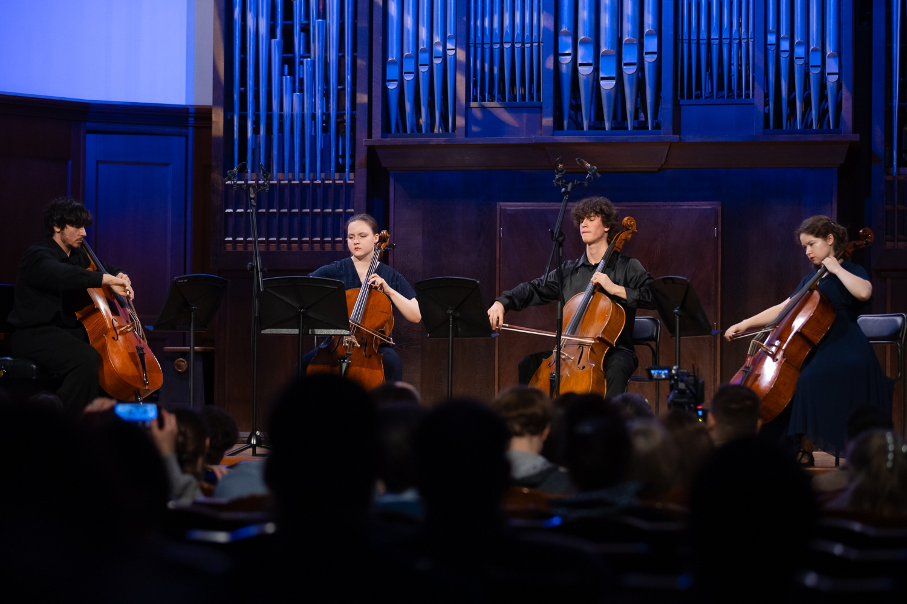
Одна встреча, один концерт или один образовательный проект иногда меняют дальнейший путь музыканта. Поэтому ВА старается создавать как можно больше разных возможностей: для учёбы, выхода на сцену, профессионального общения, знакомства с новыми идеями и продолжения развития.
Людям на разных этапах нужны разные форматы. Мы учитываем сегодняшний уровень музыканта, его потенциал и задачи и стараемся понять, какая возможность будет действительно полезна именно сейчас.
Профессиональная реализация не исчерпывается сольной карьерой. Музыкант может найти себя в ансамбле или оркестре, в педагогике, методической и исследовательской работе, музыкальном просветительстве. У каждого из этих путей есть своя ценность. Важно, чтобы человек смог соединить способности и интерес с профессиональной состоятельностью и востребованностью.
Академия может открыть дверь, помочь увидеть новое направление и оставаться рядом в течение нескольких лет. Дальнейший путь складывается из таланта, труда, личного выбора и множества обстоятельств. Но возможность, появившаяся в нужный момент, действительно способна многое изменить.
5. Развитие виолончели в регионах России
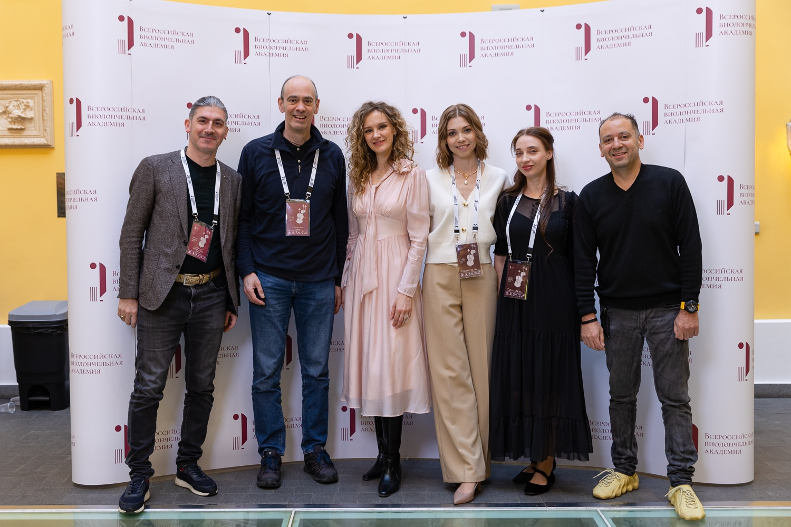
Сильная виолончельная школа не может существовать только в нескольких крупных городах. Нам важно видеть и слышать музыкантов и педагогов из разных регионов России, узнавать их опыт и помогать им становиться частью общего профессионального пространства.
Особую роль в развитии региональной среды играют педагоги. Один увлечённый и хорошо подготовленный преподаватель способен вырастить целый круг учеников, сформировать класс, объединить вокруг себя людей и со временем изменить музыкальную жизнь своего города. Поэтому нам важно, чтобы педагоги могли общаться с коллегами, знакомиться с разными методами, получать новые знания и возвращаться с ними к своим ученикам.
Мы хотим связывать региональные школы друг с другом и с ведущими мастерами, делать профессиональные ресурсы доступнее, находить талантливых людей и поддерживать появление новых виолончельных центров по всей стране. Чтобы место рождения или отсутствие знакомств не закрывали человеку путь к развитию.
6. Сохраняем традиции и привносим новое
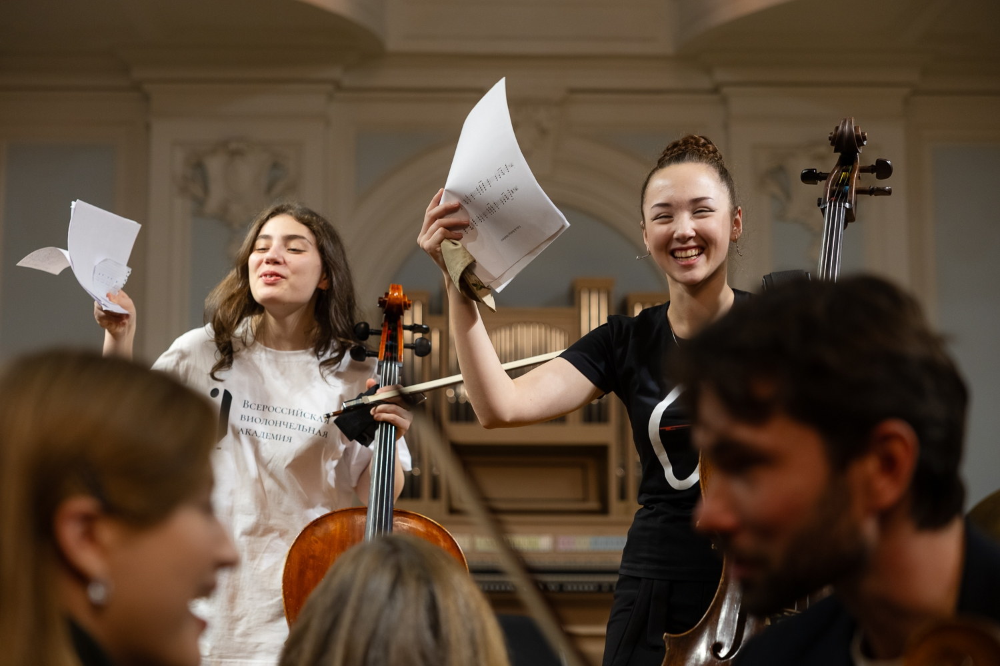
Мы очень ценим традиции русской и советской виолончельной школы: высокие требования к исполнению, накопленные педагогические знания, глубину художественного высказывания и серьёзное отношение к музыке. Нам важно помнить её историю, сохранять опыт предыдущих поколений и передавать его дальше.
При этом школа остаётся живой, пока развивается. Уважение к традиции не мешает знакомиться с другими подходами, искать новые способы обучения, пробовать современные форматы и смотреть на привычные вещи с другой стороны.
Новое имеет смысл, когда оно отвечает реальным задачам профессии и помогает говорить с современным человеком, не упрощая музыку и не теряя её сути. Именно баланс преемственности и открытости позволяет традиции продолжаться, а музыкантам — оставаться разными.
Постоянное развитие относится и к самой Академии. Мы разбираем собственный опыт, меняем то, что перестало работать, и продолжаем учиться у музыкантов, педагогов, слушателей и партнёров.
7. Открытость к миру
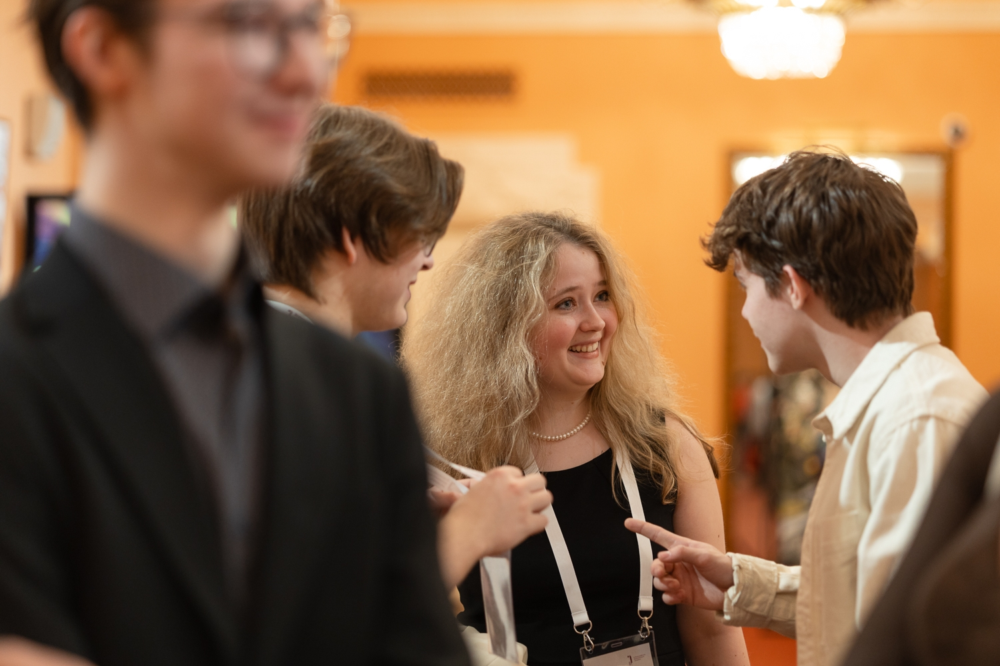
Музыкальная культура всегда развивалась благодаря встрече разных школ, традиций и характеров. Нам интересен опыт коллег из других стран, и мы рады музыкантам, педагогам и слушателям любой национальности.
Международная работа ВА — это профессиональный обмен и культурная дипломатия. Музыка даёт людям общий язык даже тогда, когда их разделяют география, история или политические обстоятельства. Через неё можно лучше понимать друг друга, представлять российскую виолончельную школу за рубежом и создавать связи, которые продолжаются после завершения отдельного проекта.
Мы выступаем за равноправный диалог: без преклонения перед иностранным и без чувства превосходства над другими. Каждая сильная школа может чем-то поделиться и чему-то научиться. В таком обмене российская традиция не теряет себя, а получает возможность развиваться и предлагать миру новое.
8. Делаем как для себя
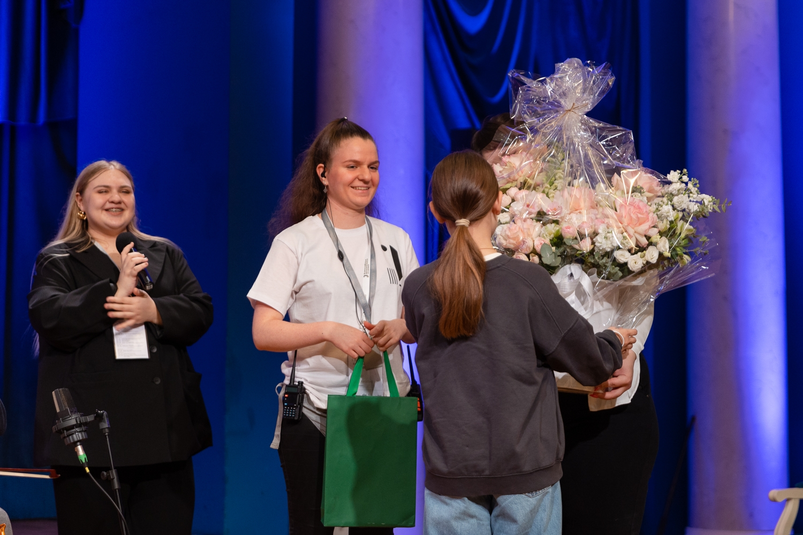
Этот принцип появился внутри команды ВВА задолго до того, как стал формулировкой для сайта. Мы стараемся создавать такие события и проекты, в которых сами хотели бы участвовать — как музыканты, педагоги или слушатели.
Для этого недостаточно сильной программы. Важны организация, понятная коммуникация, соблюдение договорённостей, внимание к деталям и человеческий комфорт. Всё это не дополнение к содержанию, а проявление уважения к участникам и их труду.
Мы не хотим делать что-либо формально. Продумываем путь человека от первого сообщения до завершения проекта, не экономим на том, от чего действительно зависит качество, и стараемся замечать мелочи, из которых складывается общее впечатление.
Большие цели требуют не громких заявлений, а последовательной работы. Мы честно оцениваем свои возможности, признаём ошибки и исправляем их. Открыты партнёрствам с государственными, частными и международными организациями, когда они интересны, полезны обеим сторонам и позволяют вместе сделать больше. При этом Академия сохраняет собственный взгляд на художественные и стратегические задачи.
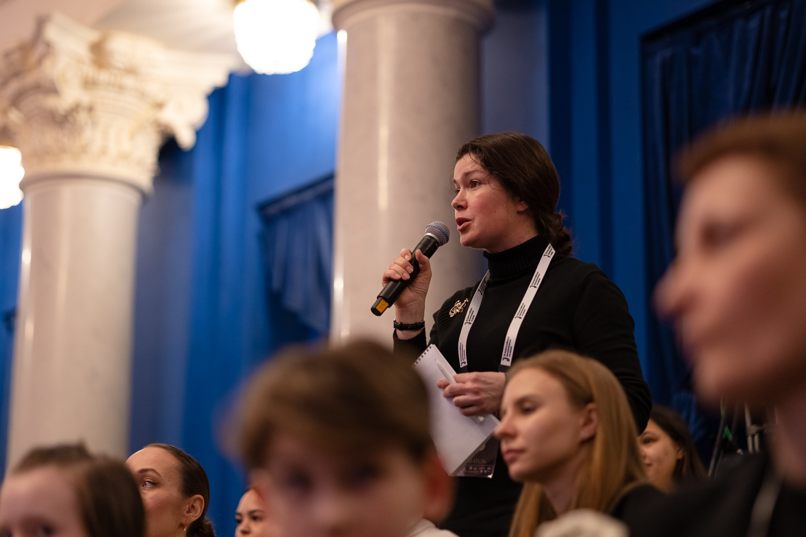
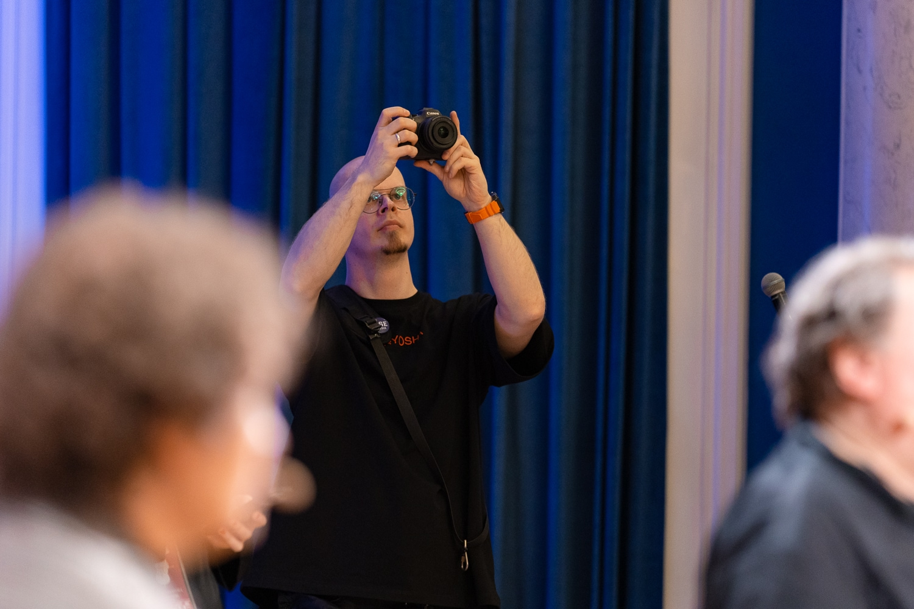
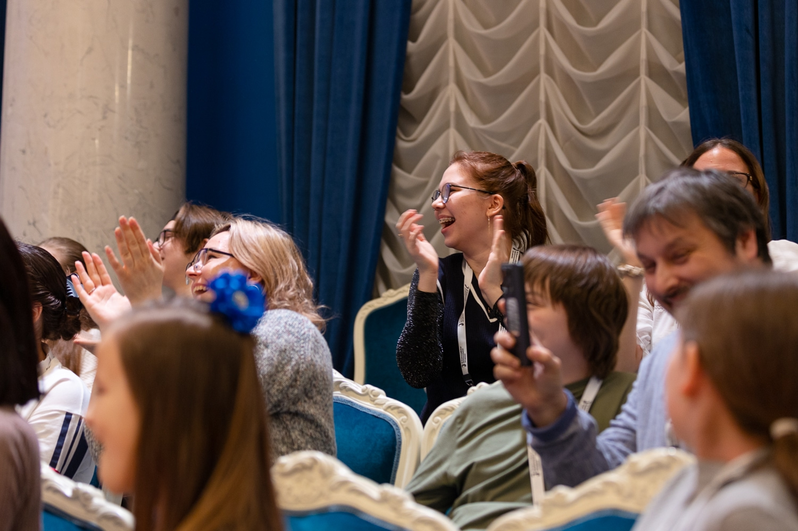
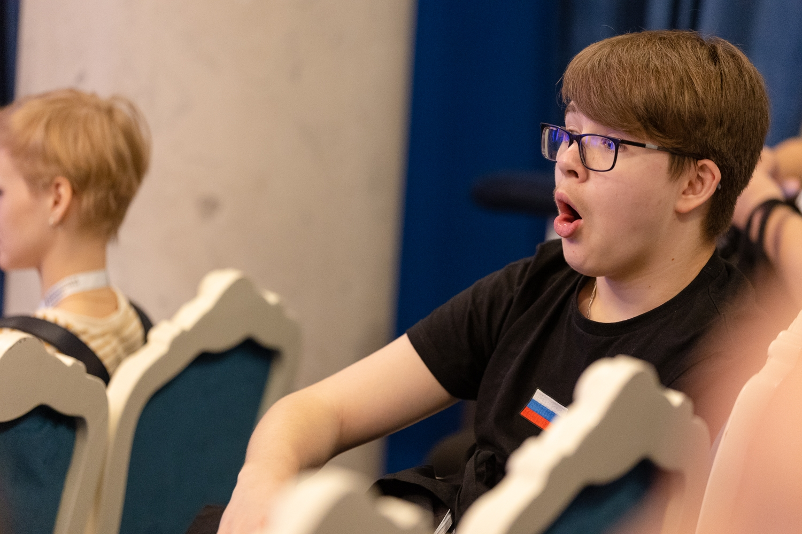
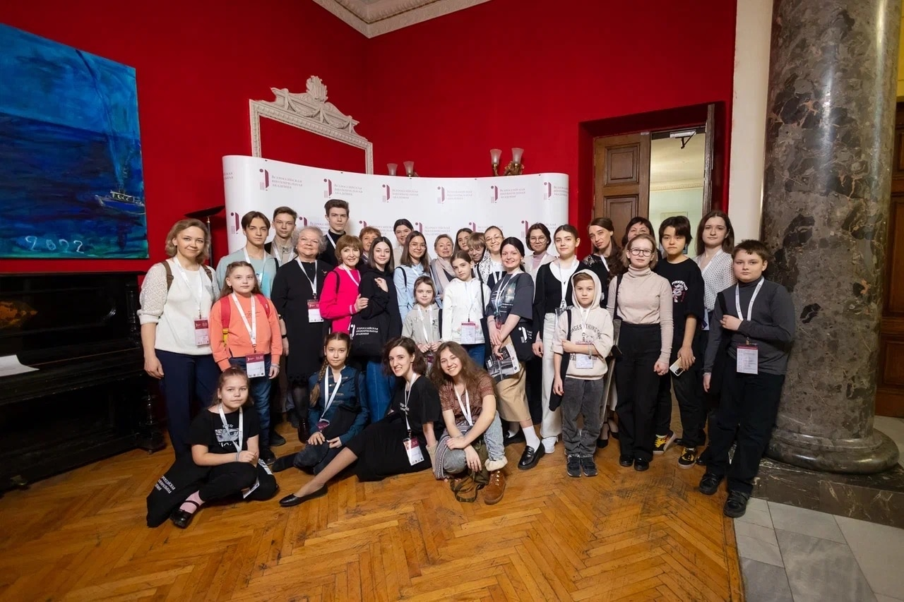
К чему мы стремимся
Мы хотим, чтобы виолончель занимала всё более заметное место в культуре и воспринималась как самостоятельный, богатый и живой мир. Чтобы вокруг неё существовала сильная система связей и возможностей — от первого знакомства с инструментом до большой профессиональной сцены.
Главный долгосрочный результат для нас — люди: исполнители и педагоги, которые росли вместе с ВА, нашли своё место в музыке и продолжают развивать профессию уже сами. И ещё — новая норма отношений внутри виолончельной среды, где мастерство, открытость, сотрудничество и уважение естественно существуют рядом.
Будущее виолончельной школы создаётся каждый день: когда педагог передаёт ученику свой опыт, молодой музыкант делает следующий шаг, артист встречает своего слушателя, а коллеги объединяются ради общего дела. Роль ВА — связывать эти усилия, давать им пространство и помогать начатому получать продолжение. В этом мы видим смысл своей работы.